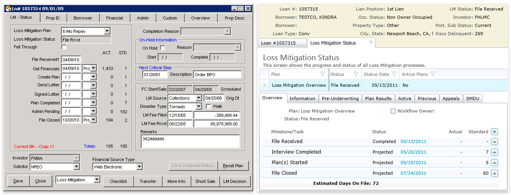

Real-World Case Studies
These UX case studies highlight my approach to problem-solving, user-centered design, and front-end development in real-world applications.
Rincon: From Data Tables to Usable Software
I redesigned a legacy mortgage servicing system to reflect how people actually work — replacing database-driven screens with intuitive, task-focused UI. The result? Faster onboarding and happier users.
Atomic Design System
Role: UX Designer + Front-End Developer
Developed reusable HTML/CSS components for a large-scale design system.

Payment Change Notifications
Role: UX Designer + Front-End Developer
Designed a compliance tracking system from scratch to help mortgage servicers, including Wells Fargo, efficiently manage Payment Change Notifications (PCNs) for Bankruptcy cases.

PDF, 4 Detailed Case Studies, ~2MB
Development Projects
These projects showcase my ability to build responsive and accessible front-end experiences using HTML, CSS, and JavaScript. While my professional development work at Quest & Local.com involved large-scale applications in ASP.NET and C#, these examples are focused demonstrations of my front-end expertise that I completed as part of my recent Responsive Web Design Certification.
Product Landing Page
Built a fully responsive landing page to market a product of my choice.